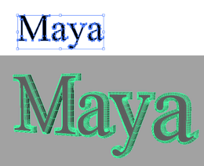

导入向量数据作为曲线或生成多边形曲面

您可以使用
SVG 工具
将在 Adobe
®
Illustrator
®
中创建的 2D SVG 对象作为 3D 几何体导入。
导入 SVG 对象
单击“多边形”(Polygons)工具架中的 SVG 图标，或转到
“创建
>
SVG”(Create > SVG)
。
在
“属性编辑器”(Attribute Editor)
中的“SVG”选项卡下，单击
“粘贴”(Paste)
以导入复制的 SVG 对象，或单击
“导入”(Import)
并从文件浏览器中导航到 SVG 文件。
注：
您也可以使用
“创建
>
Adobe Illustrator 对象”(Create > Adobe Illustrator Object)
以完成同样的操作，尽管具有更多的限制。有关更多信息，请参见
“Adobe Illustrator 对象”(Adobe Illustrator Object)选项
。
本节内容
已导入的向量数据疑难解答
父主题：
创建多边形基本体
父主题：
创建 NURBS 曲线